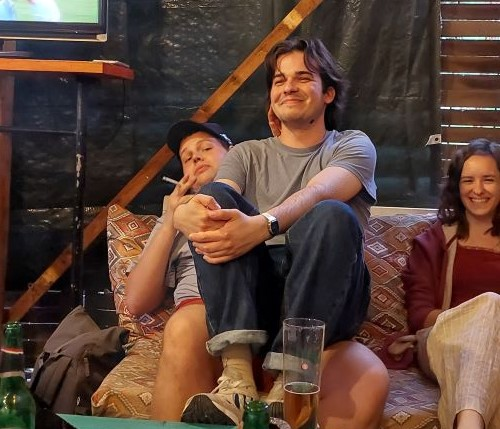
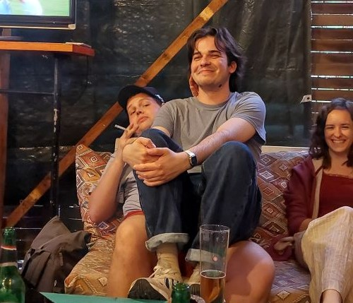
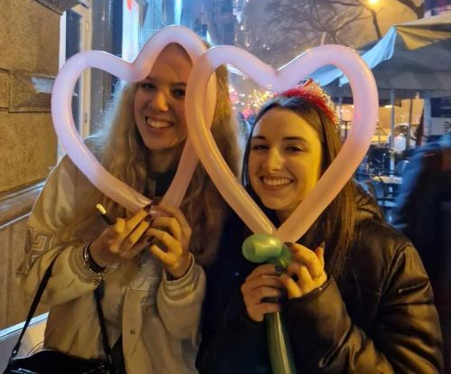
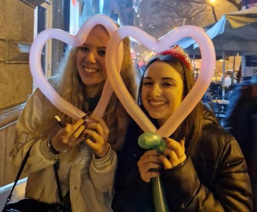

Mag
-
Klasszikus pubok és a romkocsmák között áll félúton
-
Hangulatos, zegzugos pincehelységéről híres, ahol a foci imádók nem csak társaságra lelhetnek, de egy jó csocsó párbajban is részesülhetnek
-
A pultosok minden vendég igényét kielégítik, a nagy ital kínálattal egyaránt
-
Áraik nagyon barátságosak
-
Cím: Budapest, Bercsényi u. 9, 1111


WW club
-
Elhíresült a máshol nem látott literes korsóban rendelhető sör miatt
-
A főpapnő kedves, de vigyázni kell vele
-
A szomjas szórakozni vágyóknak van lehetőségük a fenti részen nyugalomban beszélgetni, ugyanakkor tökéletes helyet biztosít a pincében található hangfal, fények és táncparkett arra, hogy megmozgassák egész testüket is
-
Áraikra bár hatott az infláció, középkategóriásak a közelben lévő többi kocsmához képest
-
Cím: Budapest, Irányi u. 25, 1056


Faház Söröző Borozó
-
Egy gyöngyszeme a Pók utcai lakótelepnek melyet a legtöbb lokális alkoholista ismer
-
Bár hétköznapokon az áltag életkor 50-60 év körül mozog, addíg a legtöbb péntekre az iskolák végeztével ez lecsökken 28 év körülire
-
Tökéletes hely focimeccsek és forma1 futamok nézésére
-
A magányos alkoholista vendégek mindig nyitottak a kényelmetlenül sokáig elhúzódó és néhol rasszista ideológiákkal megspékelt eszmecserékre, ha valaki ilyen élményekre vágyna
-
Áraival nem lehet vetekedni a városban, már már gyanút keltően kedvezőek
-
Cím: Budapest, Római stny. 6, 1031
 


Grund
-
]Egy belvárosban elrejtett kocsma, melynek területe és újabbnál újabb szobái és teraszai véget nem érőek
-
Első látogatásra az ember elveszettnek érezheti magát a labirintushoz hasonlító elrendezése miatt, viszont a helyet hamar ki lehet ismerni
-
Nyáron tud a leghangulatosabb lenni a sok nyitott terasza miatt, mely nem csak a friss levegőt kedvelőknek hanem a dohányosoknak is kényelmes
-
Nagy társasági összejöveteleknek tökéletes választás
-
Az árai az egyszerű kocsmákhoz képest a felső határt verik, mindezt kompenzálni tudja a minden napon elérhető 5-7 óra között tartó 50%-os akció az összes koktélra
-
Cím: Budapest, Nagy Templom utca 30, 1082
 
